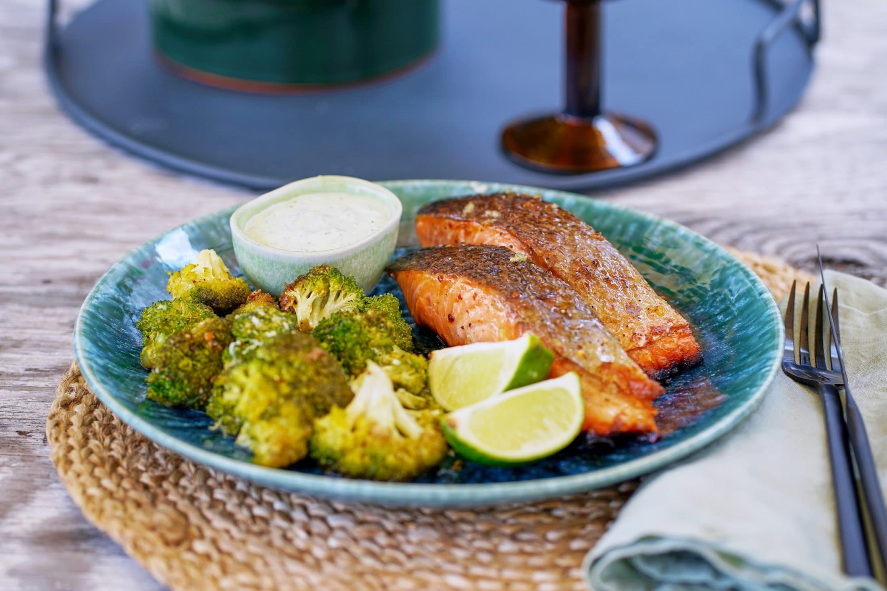
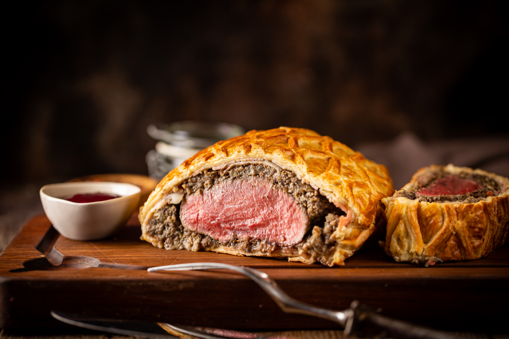

Ez egy egész sonka, bevagdosva, fényes mázzal lekenve,
szegfűszeggel megszurkálva. A húst mézes-mustáros szósz
borítja, ettől finomabb és szaftosabb lesz.
2. Vadas libamellel, zsemlegombóccal
Libamellből készítve, petrezselymes zsemlegombóccal
mennyei lesz. Érdemes egy éjszakát pácolni azért, hogy
a mell ne száradjon ki.
3. Mézes-lime-os lazacfilé
Egy igazán gyorsan elkészíthető étel, illetve a halhoz
nagyon jól passzol a citrom, de limeot is érdemes használni.

4. Wellington-bélszín
Igazán ügyelni kell a hőfokokra és a sütési időkre, de
egyáltalán nem bonyolult az összeállítása.

5. Töltött káposzta
Egy tradicionális magyar étel amit akár füstölt hússal töltve
is szoktak készíteni.